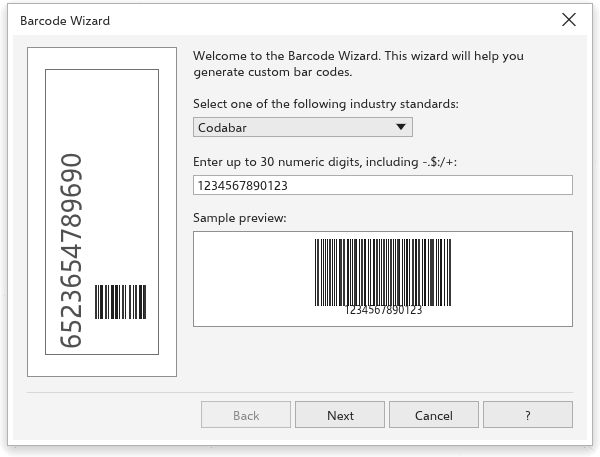

Códigos de barras e QR codes
O TraceDraw faz códigos de barras para produtos, etiquetas e estoque, e QR codes que os celulares leem. Os dois são feitos de formas vetoriais comuns, então imprimem nítidos em qualquer tamanho.
Fazer um código de barras
Escolha Objeto > Inserir > Código de barras para abrir o Assistente de código de barras. Ele tem três etapas; uma Prévia de exemplo em cada uma mostra o código como ele será feito. Use Avançar e Voltar para andar entre as etapas, e Concluir na última.

Etapa 1: o padrão e os dados
Escolha um dos padrões e digite os dados. Escolher um padrão coloca um exemplo no campo, e o assistente diz o que o padrão aceita:
- Codabar: até 30 dígitos e os sinais
- $ : / . +, entre caracteres de início e fim de A a D. - Code 39: letras maiúsculas, dígitos e
- . espaço $ / + %. - Code 128: qualquer caractere imprimível.
- EAN-13, EAN-8 e UPC-A: 12, 7 ou 11 dígitos, ou um a mais com o dígito verificador, seguidos opcionalmente de um espaço e um complemento de 2 ou 5 dígitos.
- UPC-E: 6 dígitos, ou o sistema numérico (0 ou 1) e 6 dígitos.
- Interleaved 2 of 5: até 40 dígitos.
Dados que o padrão não aceita mantêm você nesta etapa, com uma mensagem.
Etapa 2: impressora e tamanhos
- Impressora: a resolução da impressora, de 150 a 2400 dpi (300 de início). As barras têm um número inteiro de pontos da impressora, para imprimirem por igual.
- Unidades para os tamanhos abaixo.
- Redução da largura da barra: pontos tirados de cada barra para compensar o espalhamento da tinta (1 de início). O código mantém a largura.
- Ampliação (escala): 100% é o tamanho padrão.
- Altura da barra (1 polegada de início), com a Largura do símbolo: {w} resultante.
- Largo para estreito: 2,0 a 3,0, para Codabar, Code 39 e Interleaved 2 of 5.
- Avançado acrescenta Adicionar o caractere de verificação (Code 39 e Interleaved 2 of 5) e a Zona de silêncio, uma margem branca atrás das barras em módulos.
Etapa 3: o texto
- A Fonte, o Tamanho (12 pontos de início), o Peso e o Alinhamento do texto legível.
- Opções, disponíveis quando o padrão as usa: Centralizar sistema/verificação, Colocar o texto acima, Mostrar o texto do complemento, Texto do complemento embaixo, Mostrar dados FACT, Mostrar asteriscos, Mostrar marcas da zona de silêncio e Mostrar início/fim.
- Tornar este código de barras legível (mostrar texto): desative para barras sem texto.
Concluir coloca o código de barras no meio da página como um grupo e o seleciona.
QR codes
Escolha Objeto > Inserir > Código QR. Um QR code é colocado no meio da página na hora, e o painel Propriedades abre na seção Código QR:
- Escolha o tipo de conteúdo: URL, E-mail, Número de telefone, SMS, Contato (vCard), Texto ou Localização.
- Preencha os campos, como Endereço (URL), ou Nome, Sobrenome, Número de telefone e Endereço de e-mail para um contato. Um campo vale quando você sai dele. Campos que os tipos têm em comum são mantidos quando você muda o tipo.
- Defina a aparência: Preenchimento dos pixels e Preenchimento do fundo (qualquer preenchimento), Contorno dos pixels e Tamanho do pixel (2,5 mm de início).
- Clique em Validar para conferir se o código pode ser lido. Uma mensagem verde confirma; uma vermelha diz por que não, por exemplo quando os pixels não são escuros o bastante em relação ao fundo.
O QR code continua editável: mova, escalone ou gire como qualquer objeto e mude o conteúdo depois. Para transformá-lo em formas simples, desagrupe-o. Conteúdo que não pode ser codificado, ou em excesso, não muda nada e aparece em vermelho.